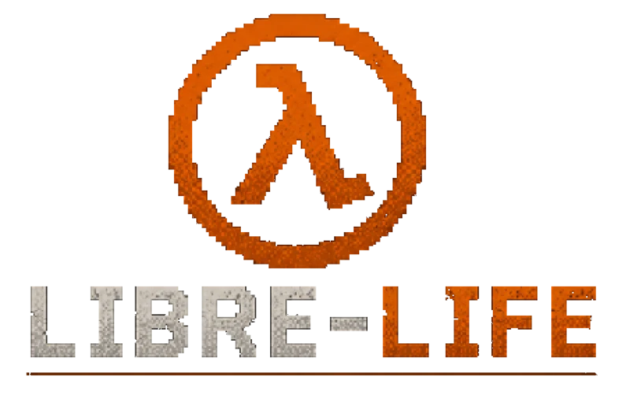

FTEQW // WEBASSEMBLY
Play the development build
Run Quake Shareware, Half-Life: Uplink, or the Hazard Course directly in your browser.
Please note that browser port is in beta and looks significantly worse.Preparing launcher…
WASD MoveMouse AimLMB FireRMB Aim / zoomE UseSpace JumpC CrouchShift SprintR ReloadG GrenadeH HealF FlashlightWheel WeaponsTab ScoresP Menu